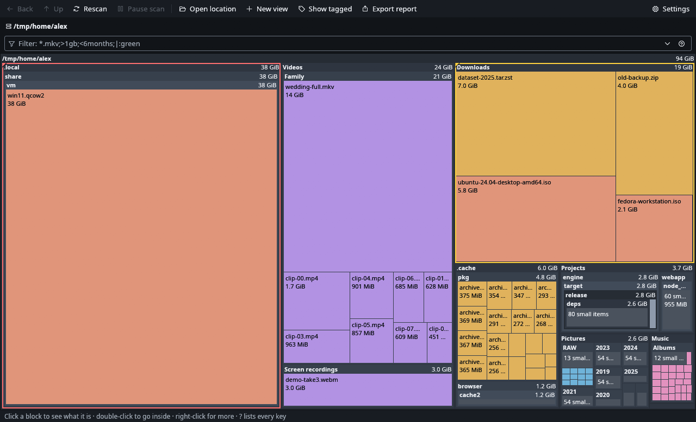
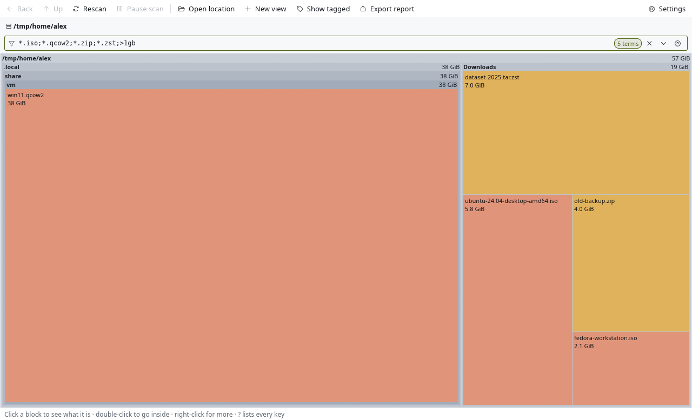

See what's taking up your disk.
A live map of every folder and file, labelled and to scale, that keeps up as things change. For Linux.
Get AcreageHow it works
Why another disk tool
- The numbers don't add up. Disk tools disagree with
duand with each other. They count hardlinks twice, stop at btrfs subvolumes, and don't say when a file is sparse. - The picture goes stale, or never shows up. You wait for the whole scan, then rescan everything after deleting one folder. Some tools crash on cloud drives, or if you act while they scan.
How it works
- Point it at a disk or a folder.Pick one from the list, or run
acreage ~from a terminal. - Watch the map fill in.Every block is a folder or file, sized by what it takes on disk, and labelled. The biggest ones are obvious at a glance.
- Go in, filter, clean up.Double-click to zoom, filter with
*.iso;>1gb, tag what to remove, move it to Trash. The map updates as you go.
What it does differently
Live, the whole time
Blocks appear while the scan runs and update when files change on disk. A changed block flashes, so you see what's growing.
Sizes that match du
Hardlinks counted once, btrfs subvolumes included, sparse and compressed files flagged. Disk usage by default, file length if you prefer.
Labels you can read
Names and sizes on the blocks. + and - set how much detail you see; double-click zooms in.
Keyboard all the way
hjkl or arrows, Enter, Backspace, / to filter, Shift+F10 for the menu, Ctrl+T for a terminal right there. No dialogs: it tiles cleanly in i3 and Sway.
Rescan just this folder
F5 refreshes the folder you're in, even while the main scan is still going. Your tags stay put.
Other drives on demand
It stays on one filesystem by default. One keystroke scans into the USB stick or network share mounted inside it.
Ask in one line
Filters combine names, sizes, age and tags. Same kind means either; different kinds mean both.
*.iso;*.qcow2;*.zip;*.zst;>1gb *.mkv;>1gb;<6months;|:green
Also: tags, several views at once, Trash with a confirm step, reports in text, CSV or JSON, and acreage DIR --report - for scripts.

Price
Free
Open source under GPL-3.0-or-later.
- No account, no telemetry, no paid tier
- Nothing leaves your machine
- If it saves you an afternoon, you can buy me a coffee
Questions
Does it delete anything on its own?
No. It only moves what you choose to Trash, after asking, and you can restore it from your file manager's Trash.
Does it need root?
No. Folders you can't read show as “No access” and are listed, not silently skipped. To include folders only root can read, get a report without a window: sudo acreage / --report - --depth 2.
Will it hang on a network share?
It never scans into network or other filesystems unless you ask. When you do, it's as fast as the server lets it be.
Why do its numbers differ from df?
df counts the whole filesystem, including space reserved for root and btrfs metadata. Acreage counts files, like du. Snapshots that share data are counted once per copy.
Wayland, X11, i3, Sway?
Built and tested on X11 under i3. Wayland should work, but hasn't been tested yet.
Can I import a scan from another tool?
Not yet. You can export a report as text, CSV or JSON.
Where are the settings?
~/.config/acreage/config.toml: plain text, safe to edit.
Find out where the space went.
Version 0.1.0 is out: a ready-made binary for x86_64 Linux with glibc 2.35 or newer. On Arch, build the package with makepkg, or build from source anywhere. The README has the steps for each.
AUR and Flathub packages are coming.